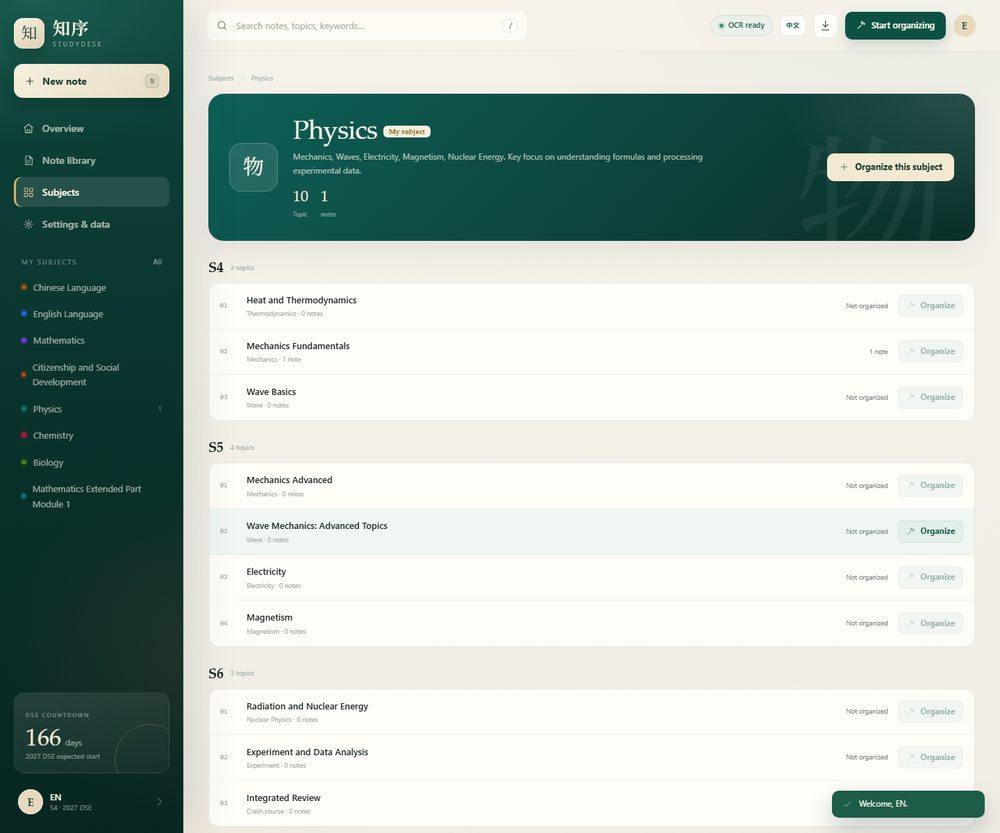
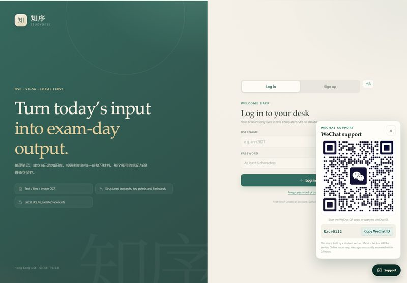

把材料收进来
图片 OCR、PDF / DOCX / PPTX / XLSX，或直接粘贴文字。保留原始材料，方便对照。
拍下课本、上传讲义 PDF，或粘贴一段课堂笔记。知序会把它拆成概念、重点、公式、易错点与自测闪卡，按你的选科整理好。
学生自建项目 · 非学校或香港考评局官方 · 当前为本地内测

学校已经有足够的题目。知序只解决一件事：把散乱的材料变成能反复复习的结构。
图片 OCR、PDF / DOCX / PPTX / XLSX，或直接粘贴文字。保留原始材料，方便对照。
知识脉络、学习目标、核心概念、重点、公式、易错点、例子、作答框架和翻面闪卡。
中三至中六、核心科与选修科（含 M1 / M2），每个账号的笔记与设置独立保存。
它帮你整理自己的笔记，并给出相关视频的搜索入口。题目、评卷参考和课程文件，请使用学校或考评局提供的授权资料。
账号、笔记和附件保存在本机 SQLite；默认不上传第三方。
非中文 / CSD 科目用本机 Ollama 转成英文；中文与 CSD 保留中文。
16 个学科、174 个课题，按 S3–S6 与单元组织。
按笔记标题、课题和学科生成 YouTube / Khan Academy / Bing 视频搜索链接。
手机、平板连同一个 Wi-Fi 就能打开；主机上的 Ollama 负责 AI。
注册时先选年级与科目，之后可修改；每个账号的笔记互相隔离。
截图来自实际运行的本地版本，不是概念稿。


非中文 / CSD 科目的笔记知识稿会在保存时用本机 Ollama 转成英文。课题名、单元名和学科简介也已英文化；中国语文与公民与社会发展保留中文。
英文为机器翻译，专有名词、公式和语义仍建议对照原图或原文校对。当前使用 qwen2.5:1.5b，速度约 5–10 秒/篇；更大的模型质量更好但更慢。
知序是本地优先项目：账号、笔记、附件和选科都存在本机 SQLite。AI 英文化默认调用本机 Ollama，材料不需要先上传到第三方。
如果以后在设置中改用云端 OpenAI 兼容接口，材料会发送到你选择的服务商；请在配置前确认其隐私条款。
本地 SQLite
笔记、账号、附件、设置都在本机。
本地 Ollama
AI 默认只消耗主机算力，不产生 API 账单。
账号隔离
每个账号的笔记与设置独立保存。
可迁移
支持 JSON 备份；以后可打包成 App。
不需要先学一套复杂的笔记方法。
按你的选科进入；也可以直接上传图片或文件。
提取文字，拆成概念、重点、公式、易错点与闪卡。
在笔记库中按学科、年级、关键词找回；相关视频可跳转搜索。
GitHub Pages 只是项目介绍页。实际使用需要在自己的电脑上运行；手机通过同一 Wi-Fi 访问主机地址。
npm install
npm start
# http://127.0.0.1:4173
# 手机：http://<主机局域网 IP>:4173当前本地内测免费。未来可能在云同步、英文额度或学校版上做付费方案；具体以届时的价格页为准，不会自动扣费。
默认不会。笔记与附件保存在本机 SQLite；AI 默认调用本机 Ollama。若你主动配置云端 API，材料才会发送到对应服务商。
可以。电脑和手机连同一个 Wi-Fi，打开主机打印的局域网地址即可。AI 仍由主机上的 Ollama 运行，手机不需要安装模型。
这两科按中文学习与作答更自然，因此保留中文知识稿；其他科目默认英文化，减少英文授课学生的转换成本。
没有。题库、每日一题和答题统计已关闭。学校已有足够题目，知序专注笔记整理与复习结构。
不是。知序由学生自行搭建，与学校、香港考试及评核局（HKEAA）无隶属关系。DSE 为香港考试及评核局举办之考试。
扫码，或复制微信号在微信里搜索添加。
Rzcr0112
本站由学生自行搭建，非学校或考评局官方。在线时间不固定；留言后 24 小时内回复。
 微信扫码添加
微信扫码添加